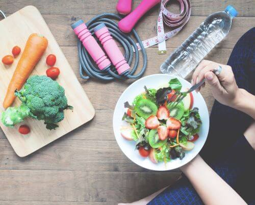

La relación entre nutrición y salud es conocida y aceptada por todos desde la antigüedad, tanto en la esfera preventiva como en la recuperación de los daños sufridos tras la enfermedad. Así, ya Hipócrates decía “deja que la comida sea tu medicina, y la medicina sea tu comida”. Pero el gran impulso en los estudios sobre nutrición se inició en el siglo XVIII con Lavoisier y Laplace, que empezaron a aplicar la tecnología al estudio de los procesos de obtención de energía a partir de los alimentos. La nutrición es el proceso por el cual el organismo ingiere, digiere, absorbe, transporta, utiliza y excreta las sustancias alimenticias, lo que permite el crecimiento, mantenimiento y reparación del organismo. A excepción de la ingesta del alimento, el resto del proceso es involuntario.
Por otro lado, la alimentación es un proceso voluntario, por el que el individuo elige los alimentos que va a ingerir atendiendo a su disponibilidad, gustos, hábitos y necesidades. Depende de factores sociales, económicos, psicológicos y geográficos, aunque este último factor alcanza menor carácter diferenciador en el mundo desarrollado por la posibilidad de transportar en poco tiempo entre distintos continentes alimentos que pueden conservar sus características organolépticas y nutritivas. Para mantener las funciones vitales y de relación es necesario aportar al organismo los nutrientes que precisa en función de su sexo, edad y actividad física y esto se realiza aa través de la alimentación. Se considera alimentación saludable aquella que es capaz decubrir las necesidades nutricionales y energéticas del individuo; pero el concepto de alimentación es más amplio y debe aportar aspectos placenteros desde el punto de vista psicológico, así como facilitar las relaciones familiares y sociales.
La actividad física contribuye a mejorar la calidad de vida y el estado de ánimo de las personas, disminuyendo el riesgo de padecer depresión, ansiedad y estrés, fomentando la integración social. Por lo contrario, la inactividad física se sitúa como el cuarto factor de riesgo de enfermedades y además es una causa directa para la aparición del sobrepeso. Sus complicaciones sobre la salud física y mental de las personas se encuentran considerablemente documentados en varias investigaciones científicas. A nivel general, en tiempos de pandemia la prioridad se concentró en buscar una estabilidad financiera que permita a las familias tener una ración constante de alimento, evitando estar en contacto con muchas personas en época de confinamiento, pero a pesar de que con ello el tiempo libre ha aumentado, el sedentarismo se ha vuelto una actividad constante, las personas no se dedican tareas que impliquen actividades físicas continuas de alto o bajo rendimiento
La aplicación consta de los diversos factores que se han recopilado con aquellos estudios para el fomento y cuidado de la salud y bienestar de las personas. Al descargar y utilizar la aplicación, estas dando un paso más para poder cuidar más de tu salud y de tu integridad física y mental.